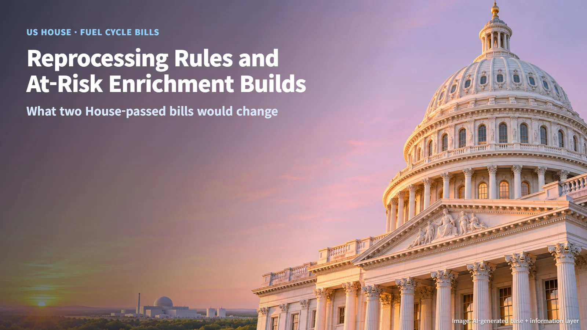
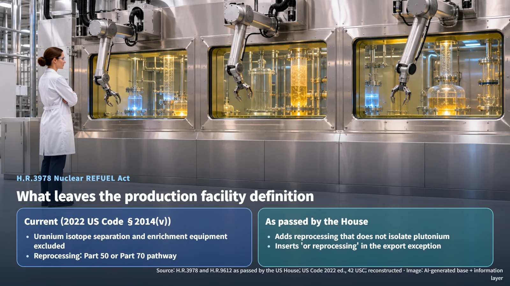
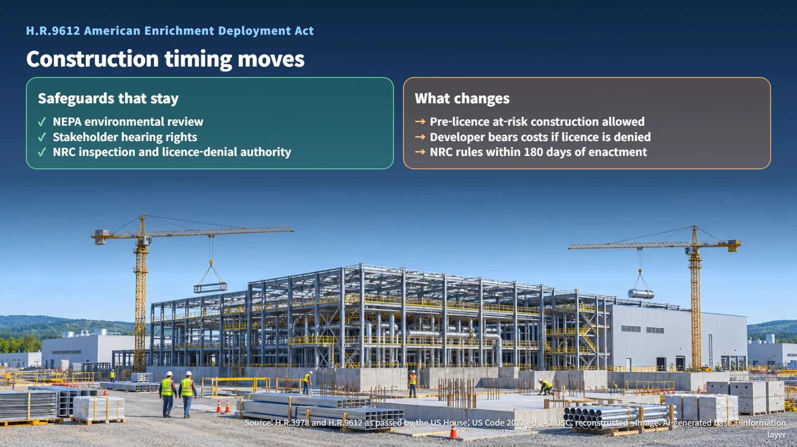
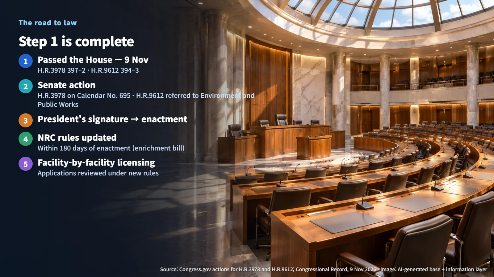

United States · Congress · Fuel Cycle
Reprocessing Classification and "At-Risk" Enrichment Construction: What Two House-Passed Fuel Cycle Bills Would Change
The REFUEL Act would reclassify reprocessing that does not isolate plutonium, and the enrichment bill would allow at-risk construction before a licence. Both have passed the House and now move to the Senate.
Headlines saying "the US House passed nuclear bills" naturally raise a follow-up question: what actually changes, and when? Two of the bills passed this week deserve a closer look. One deals with how the law classifies facilities that reprocess spent nuclear fuel. The other deals with when construction of a uranium enrichment facility can begin. Below, we walk through what each bill would change and which steps remain before either one takes effect.

The 9 November House Votes: Four Bills Passed, Two Postponed
According to the Congressional Record for 9 November, the House passed four nuclear-related bills. H.R.3978, the Nuclear REFUEL Act, which addresses the classification of reprocessing, passed 397 to 2. H.R.9612, the American Enrichment Deployment Act, which addresses enrichment facility procedures, passed 394 to 3. A bill reforming an advisory committee and a bill on compensation authority at the Nuclear Regulatory Commission (NRC) also passed the same day. Two other bills, one on streamlining hearing procedures (H.R.5549) and one on DOE transparency (H.R.9084), were debated, and further proceedings on them were postponed.
The vote counts show how broad the support was. Worked out, the approval rates are:
> REFUEL Act: 397 ÷ (397 + 2) ≈ 99.5% > Enrichment bill: 394 ÷ (394 + 3) ≈ 99.2%
With only two and three votes against, both bills cleared the House with near-unanimous support. The next venue is the Senate.
Reprocessing That Keeps Plutonium Mixed, and the "Production Facility" Label
Reprocessing is the process of separating and recovering usable material from fuel that has already been used in a reactor. The Atomic Energy Act (AEA) defines a "production facility" as equipment that produces special nuclear material significant to public safety or national security. In the 2022 edition of the US Code (42 USC §2014(v)), facilities for separating or enriching uranium isotopes are excluded from this definition for the purposes of certain chapters of the Act, while a separate exception applies to exports.
The REFUEL Act adds a new item to that carve-out: reprocessing of spent nuclear fuel that "does not isolate plutonium." The target is processes that recover plutonium while it stays mixed with other transuranic elements (elements heavier than uranium). The bill also inserts the words "or reprocessing" into the related export exception.
The classification matters because it is tied to the licensing pathway. In its June 2026 proposed rule, the NRC explains that a reprocessing facility could be licensed under 10 CFR Part 50 (production and utilization facilities) or Part 70 (special nuclear material), and that either pathway may call for exemption requests or additional license conditions. That makes what is separated inside the process, and in what composition, the starting point of any classification review. The NRC reviews the safety and security risks of plutonium separation and special nuclear material production facility by facility, and a quantitative threshold for "not isolating" plutonium is left to consultation with the regulator and follow-on rules.

Building Enrichment Plants Ahead of a License: What Changes and What Stays
Section 193 of the current AEA (§2243 in the 2022 US Code) sets out a dedicated procedure for enrichment facilities. It treats licensing as a major federal action under the National Environmental Policy Act (NEPA), requires an environmental impact statement before the hearing concludes, provides for a single hearing and decision before a construction and operating license is issued, and requires a pre-operation inspection with published results. In its June proposed rule, the NRC explained that enrichment and production facilities are required by statute to receive a license before construction begins.
H.R.9612 replaces §193(a)–(c) with an "at-risk construction" provision. It allows pre-license construction under the same conditions that apply to other fuel cycle facilities (those licensed under §53 and §63). The phrase "at risk" captures the trade-off. A developer can run construction in parallel with the license review and shorten the schedule, and if the project falls short of the requirements and the license is denied, the developer absorbs the money already spent. The bill expressly preserves the NRC's authority to deny a license, and it includes a condition that the early investment cannot weigh on the licensing decision.

| Item | Current law (2022 US Code) | House-passed bills | |---|---|---| | Excluded from the production facility definition | Uranium separation and enrichment facilities | + Reprocessing that does not isolate plutonium | | Start of enrichment facility construction | After the license is issued | At-risk construction on the same terms as other fuel cycle facilities | | What stays in place | NEPA review, hearing rights, inspection authority, authority to deny a license | Unchanged |
Source: reconstructed from H.R.3978 and H.R.9612 as passed by the US House, and 42 USC (2022 edition)
In short, what moves is the timing of construction. The safety and procedural safeguards, including environmental review, stakeholder hearing rights and NRC inspection authority, stay where they are.
The Steps Left Before These Bills Become Law
Both bills have now passed the House, and they are taking different routes in the Senate. On 10 November, H.R.3978 was placed on the Senate Legislative Calendar under General Orders as Calendar No. 695, while H.R.9612 was referred the same day to the Senate Committee on Environment and Public Works. From here, each bill needs Senate action and the President's signature to become law.
The enrichment bill directs the NRC to issue or revise the relevant regulations within 180 days after enactment. The 180-day clock starts on the date of enactment, so the actual timeline follows from how the Senate handles the bill. After that, individual facilities would apply for licenses and go through review under the new rules.
Passed the House → Senate action → President's signature → NRC rules updated within 180 days → facility-by-facility licensing. Keeping this sequence in mind makes it easy to place each future headline at the right stage. The next thing to watch is the text the Senate takes up for each of the two bills.
